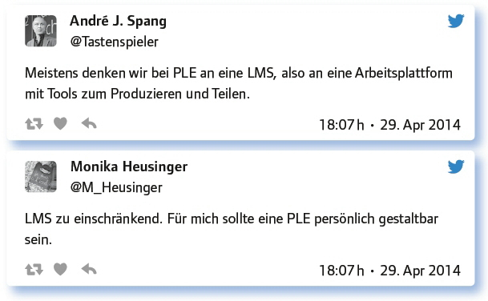
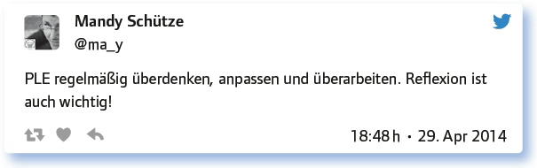

2.3
Implementierung einer persönlichen Lernumgebung (PLE) im Unterricht (#EDchatDE vom 29. April 2014)
von Monika Heusinger
Jeder lernt anders, strukturiert seine Lernprozesse anders. Daraus folgt die Überlegung, wie man die individuelle Organisation jedes Lernenden in die schulische Sozialwelt integrieren kann. Torsten Larbig meinte dazu: „Der Vorschlag, beim #EDchatDE über die Implementierung einer persönlichen Lernumgebung (PLE) im Unterricht zu diskutieren, enthält in sich eine wunderbare Contradictio in adiecto: Eine persönliche Lernumgebung soll also im Unterricht implementiert werden!?“
In der ersten Frage wurde daher diskutiert, ob dafür ein digitales Lernmanagementsystem (LMS) vorgegeben wird, das individuell gestaltbar ist oder ob den Lernenden freigestellt wird, mit welchen digitalen Anwendungen und welchen Vernetzungsmöglichkeiten sie ihre Lernprozesse selbst gestalten.
Persönliche oder personalisierte Lernumgebung? Persönlich gestaltet oder per LMS vorgegeben? Wovon reden wir heute eigentlich?

In den folgenden Fragen wurden konkret Organisationsmodelle und Möglichkeiten bzw. Grenzen der Implementierung diskutiert.
Hast du eine PLE? Wie sieht die aus?
Teile des Twitter-, G+-, FB- und Blog-Netzwerks bilden hauptsächlich meine PLE.
Auch regelmäßiger Austausch mit Kollegen, Social Media wie Twitter, Feeds, Wikis, Blogs, Social Bookmarking, Newsletters.
Bruchstücke, die zusammen eine ganz gute Umgebung bilden.
Persönliche Lernumgebungen in die Schule/Hochschule implementieren: (Wie) geht das? Erfahrungen? Visionen? Zweifel? Hindernisse?
Suche ein Bild (oder Musik/Video) zum heutigen Thema!
PLE versus LMS via @Downes, decentralized versus centralized: https://t.co/ZfXXw-WUSMC
Erfolgreich studieren mit dem Internet. Uni Bremen: https://t.co/Ac6Bw9JXIW
Musik: The First Step – Learning – https://t.co/TFJTNa1Nrs
Ken Robinson: How to escape education’s death valley: http://t.co/HZAif1Jhba
Worin eigentlich besteht der didaktische Mehrwert von PLE? Und mit welchen Methoden kann man sie im Unterricht einführen?
Vernetzung, Kollaboration, Nachhaltigkeit, offenes und transparentes Arbeiten, Individualisierung. Real life.
Eine PLE kann man nicht „Einführen“. Das kann nur wachsen. Mehrwert? PLE ist Lernen in seiner natürlichen Form! #backtotheroots
Nützliche Software muss als sinnvolle Unterstützung wahrgenommen werden.
Manche Lehrer „lernen“, mehr Freiheiten zu gewähren/zu akzeptieren.
Welches „System“ sie dafür nutzen und wie sie ggf. auch zusammenarbeiten (Abitur …) ist mir da schon egal, Hauptsache sie tun‘s.
Didaktischer Mehrwert liegt in der Motivation der Lernenden und in der Öffnung der Schule nach außen.
PLE ist wichtig, um eigene Lernprozesse effektiver zu gestalten und die Informationsflut zu filtern bzw. zu organisieren.
Hirngerechtes lebenslanges Lernen & individuelle Bildung.
Es ist nicht Aufgabe der Schule, PLE zu propagieren, sondern formalen Prüfungsanfoderungen gerecht zu werden, oder?
Prüfungsanforderungen wird man einfacher gerecht, wenn man eine gut organisierte PLE hat.
Ich bringe ihnen bei zu fischen … Wollen wir Roboter oder selbst denkende Menschen? Noten sind nicht alles.
PLE ist kein Selbstzweck, sondern unterstützt das Lernen. Prüfungsanforderungen erreicht man damit spielend :-).
Smartphone und Internet gehören zum Alltag der Jugendlichen.
Tendenziell zeigen Schüler, die vernetzt lernen und ihre PLE haben, bessere schulische Leistungen.
@lisarosa hat dazu schon viel Wichtiges gesagt. PLE-Kompetenz ist zentrale Aufgabe der Schule: http://t.co/HF6BJ3fSo9
Der @rappld war bei den edudays in Krems, weil er sein (Lern-)Netzwerk (Twitter, FB, WP) aufgebaut hat: http://t.co/fs6Ced6OrW
Welche Anregungen, Fragen hast du sonst noch zum Thema?

Fazit:
In der Diskussion wurde immer wieder betont, dass Schule sich öffnen muss und dass Lernende die Möglichkeit haben müssen, ihre Lernumgebung selbst zu gestalten, um nachhaltiges und lebenslanges Lernen zu ermöglichen. Schule hat allerdings auch die Aufgabe, Organisations- bzw. Vernetzungsmöglichkeiten aufzuzeigen, da Lernerautonomie nicht von alleine entsteht.
Weitere Informationen zum Thema:
Panke, Stefanie (für e-teaching.org), Personal Learning Environment und Open Online Course: Neue Formen offenen Lernens im Netz: https://www.e-teaching.org/materialien/artikel/langtext_offen_lernen_panke_2011.pdf
Steitz, Klaus (für die TU Darmstadt), PLE – Personal Learning Environment und individuelle Lernumgebung: http://blog.e-learning.tu-darmstadt.de/2010/02/15/ple-personal-learning-environment-und-individuelle-lernumgebung/
Link zum vollständigen Protokoll: